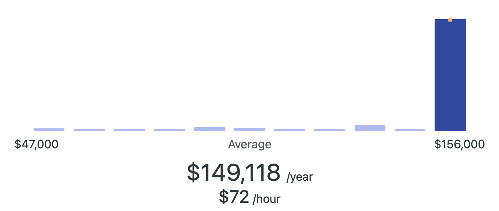

Gaming & Animation Career Opportunities
Average Salary
$149,118 per year.

What Do Gaming & Animation Professionals Do?
Gaming and animation professionals design, develop, and animate interactive experiences for players and viewers. They create characters, environments, and storylines while using coding, 3D modeling, and digital art tools to bring ideas to life. Careers in this field often involve collaboration between artists, programmers, and storytellers to deliver immersive games and animations. Roles may include game developers, 3D modelers, animators, visual effects artists, and interactive media designers.
Companies Offering Opportunities
Here are some companies that regularly hire or provide internships for gaming and animation roles:
- GameStop (headquartered in Grapevine, TX – near Oklahoma, opportunities in game development support and publishing)
- Gearbox Software (Frisco, TX – developer of major titles like Borderlands)
- id Software (Richardson, TX – creators of DOOM and Quake, part of Bethesda Softworks)
- Oklahoma Film & TV Industry (growing opportunities in animation and digital media)
- Electronic Arts (EA) (national – internships in game design, animation, and engineering)
- Blizzard Entertainment (national – animation, design, and game development roles)
- Pixar & Disney Animation Studios (national – leading studios in animation and storytelling)